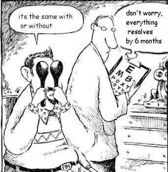
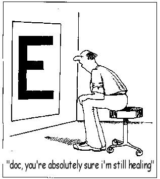
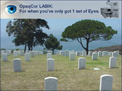
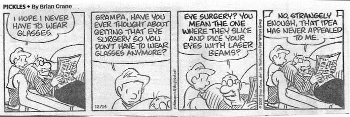

Некоторые из приведенных ниже статей были написаны недовольными пациентами LASIK, чтобы помочь им справиться с ситуацией. Пациенты с осложнениями со временем приобретают значительный опыт чтения между строк и понимания рекламной шумихи, связанной с LASIK. По этой причине некоторые из приведенных ниже намеков будут непонятны тем, кто еще не узнал правду о рефракционной хирургии.
Лечение осложнений LASIK


Для немедленного освобождения.
Лента новостей RS от 16 декабря 2004 г. Слепая лагуна, Луизиана.

Лазерный центр "Ослепленный светом" (BBTLLC) в Луизиане рад сообщить о появлении новейшего поколения лазерных корректоров. "Ослепленный светом" открывает новую эру в рефракционной хирургии благодаря своей первой в своем роде мобильной услуге. Будущие пациенты, которые опасаются риска, связанного с поездкой в клинику LASIK и возвращением из нее, вскоре смогут провести операцию LASIK, не выходя из дома.... подробнее...Похоже, шумиха вокруг LASIK не обманула старину Эрла!

Зависимость размера зрачка от результата через шесть месяцев после операции OpaqCor(tm) LASIK
Доктор Смоллхорн, военно-морская база США в Гуантанамо.
Журнал рефракционных лжесвидетельств, 1, 1-27.
РЕЗЮМЕ: 347 заключенным "Аль-Каиды" на военно-морской базе США в Гуантанамо, Куба, была проведена операция OpaqCor (tm) - новая методика рефракционной хирургии, разработанная доктором Марком Овзорро из лазерного центра Blinded By The Light (BBTLLC) в Луизиане. Недавно одобренный FDA как безопасный и эффективный, OpaqCor предназначен для создания идеально непрозрачной роговицы, что полностью исключает ошибку волнового фронта. Все операции были выполнены доктором Смолл Хорном, военно-морским хирургом США. Размер зрачка регистрировался в стандартных условиях: испытуемые должны были смотреть прямо на солнце. РЕЗУЛЬТАТЫ: Из 694 глазных яблок все зрачки были успешно удалены. У 501 глаза немедленно развилась эктазия, и было объявлено, что она прошла успешно. У испытуемых с большими зрачками (n=2) помутнение было полным через 3 месяца, 6 месяцев и 1 год без каких-либо отклонений от нормы.
Принцесса Лея пытается получить помощь в связи с осложнениями, возникшими у нее после операции LASIK
Что произойдет, когда принцессе Лее сделают операцию LASIK у хирурга Дарта Лазера? Узнайте, пока Лея, самый идеальный кандидат для Восстания, пытается выяснить, что же, черт возьми, не так с ее глазами... Кажется, что даже в 24 веке некоторые вещи никогда не меняются...
Один день из жизни хирурга-лазериста
Звонит будильник! Впереди долгий день, так что я просто возьму рогалик по пути к двери. Что у меня на завтрак? Как минимум 8 послеоперационных дней. Слава богу, что у меня есть такое руководство, иначе мне было бы 40 лет, и у меня не было бы времени зарабатывать на удалении роговицы. О, мне нужно попросить Синди позвонить представителю keratome и сказать ему, что она прилипает! Вчера, черт возьми, я сделала небольшой надрез. На меня, скорее всего, подадут в суд. Почему, ну почему я до сих пор делаю lasik через адвокатов???? Что ж, давай я позвоню Майку. "Привет, Майк, мои акции снова упали из-за той вонючей газетной статьи об осложнениях, связанных с lasik. Я никогда так не ненавидел публикацию статей, как сейчас. Мне звонят по этому поводу со всей страны. Да, просто продай все это, пока цены не упали еще больше. Я не вижу никаких хороших новостей для этой отрасли. Спасибо, приятель. Позже.
подробнееПредставьте себе НАСТОЯЩИЙ семинар по Lasik
"Добрый вечер, дамы и господа. В день операции я сначала расширю ваш глаз с помощью металлического устройства, которое может вызвать повреждение нервов и бокаловидных клеток. Ваши бокаловидные клетки вырабатывают белки, которые обеспечивают смазывание ваших глаз. Дамы, помните, как вам всегда говорили, что нужно быть очень аккуратными с салфетками вокруг глаз? Забудьте об этом, я постараюсь максимально использовать их в дневное время. Возможно, у вас обвисшее веко или глаза не закрываются полностью, когда я закончу." Затем я применю мощное всасывание, чтобы вытащить плавающие предметы и потенциально повредить вашу сетчатку и зрительный нерв!
подробнееТема: Исследование "Хэллоуин", проведенное Мегафоном, Манчи и др.
Вечером в день Хэллоуина по наблюдаемому району проезжало много машин. В то время как многие автомобили наблюдали за 25 Ограничения скорости в несколько миль в час, и многие из них были замечены за превышением установленной скорости, несколько автомобилей мчались по плохо освещенным улицам этого жилого района, а один двигался со скоростью 50 миль в час.
Мы наблюдали за детьми, которые играли в прятки, в масках на лицах, которые , по-видимому, мешали им видеть, и часто видели , что они не обращают внимания на окружающее. Несмотря на это, во время нашего исследования никто не погиб и не пострадал в результате столкновения с автомобилем.
подробнее...